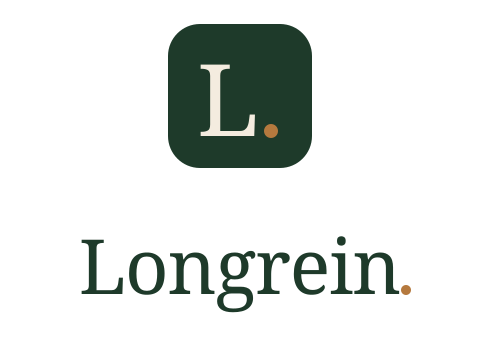

Run the yard. Protect the horses.
01 — Primary wordmark
The wordmark is the brand.
Source Serif 4 Medium. The period is not punctuation — it is the brand mark, set in Saddle Tan as the single moment of warmth in an otherwise composed identity.
02 — App icon
The L. monogram.
For tile contexts where the full wordmark won't read — phone home screens, browser tabs, avatars, social profile photos.
In context
03 — Stacked lockup
Vertical use.
When the horizontal wordmark is too wide — login screens, sidebars, square social posts, splash screens.

04 — Colour variants
One identity, four reproductions.
Default green-on-cream is canonical. The other variants exist for backgrounds the brand cannot control.
05 — Palette
Locked. Don't add colours.
No navy, no orange (retired April 2026), no purple/blue SaaS gradients. The full system runs on five hexes plus two muted neutrals.
06 — Typography
Serif for promise. Sans for proof.
Source Serif 4 carries the brand voice — warm, considered, European. Inter handles the working text — clean, neutral, readable on phones.
Yes, you can run a stable on WhatsApp. Yes, you'll lose €200 a month doing it — in missed lessons, double-booked stalls, and feed orders that never made it to the supplier.
07 — Clear space & minimum size
Give it room.
08 — Don'ts
What breaks the identity.
Navy + orange was the pre-rebrand palette. Retired 2026-04-30.
Never warp, condense, or distort. Resize proportionally only.
The period is the brand mark — not optional. Keep it.
The wordmark is locked to Source Serif 4. Inter is for body, never for the mark.
No horse silhouettes, hoofprints, horseshoes, emojis. The name is the equestrian signal — quietly.
Use the cream variant on green/dark backgrounds. Never green-on-green.
09 — Files
Asset library.
SVG is the source of truth — scales without loss. PNGs are pre-rendered for places SVG can't go (Slack avatars, app stores, email).
| File | Format | Use |
|---|---|---|
| longrein-wordmark.svg | SVG | Primary horizontal wordmark · default colour |
| longrein-wordmark-cream.svg | SVG | Wordmark for dark / coloured backgrounds |
| longrein-wordmark-mono-black.svg | SVG | Single-colour black for press, fax, 1-bit print |
| longrein-icon.svg | SVG | App icon — green tile · master |
| longrein-icon-mono.svg | SVG | App icon — cream tile (for dark backgrounds) |
| longrein-icon-favicon.svg | SVG | Favicon (optimised for 16-64 px) |
| longrein-stacked.svg | SVG | Stacked lockup — icon over wordmark |
| longrein-symbol-arc.svg | SVG | Decorative long-rein arc (dividers, watermarks) |
| PNG exports — /logo/png/ | ||
| wordmark · 3040×720 | PNG | Hero / large-format · @4x retina |
| wordmark · 1520×360 | PNG | Web header @2x |
| icon · 1024×1024 | PNG | App store master |
| icon · 180×180 | PNG | iOS home screen (apple-touch-icon) |
| favicon · 32×32 | PNG | Browser tab |
| stacked · 960×720 | PNG | Login screen, splash |
{kind=link}
{kind=link}
{kind=link}
{kind=link}
{kind=link}
{kind=link}
{kind=link}
{kind=link}
{kind=link}
{kind=link}
{kind=link}
{kind=link}
{kind=link}
{kind=link}